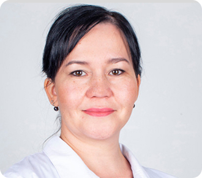
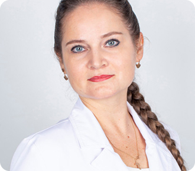
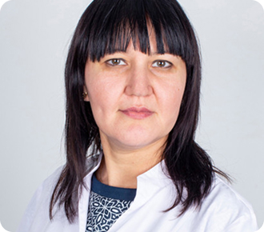

О компании в Казани
«КОРД Оптика» — это федеральная сеть салонов оптики, салоны которой открыты для посетителей в Татарстане, Самаре, Тольятти, Уфе, Йошкар-Оле и Волжске.
Ремонт, обслуживание очков, а также тонирование линз
Бесплатная проверка зрения во всех наших салонах
Федеральная сеть, насчитывающая уже 131 салон
В салонах «КОРД Оптики» в Казани можно приобрести оправы и линзы для медицинских очков, солнцезащитные очки и контактные линзы, а также большой ассортимент аксессуаров для очков и контактных линз.
В Татарстане открыто 47 наших салонов оптики, к которых доступны услуги аппаратного лечения, прием врача-офтальмолога, ремонт и сервис очков, тонирование и окрашивание линз и подбор очков.
Важным шагом навстречу клиентам, задавшим стандарт для местных салонов оптики, стала бесплатная проверка зрения — любой клиент может узнать остроту своего зрения в нашем салоне, не потратив при этом ни копейки.
Как найти наши салоны в Казани?
Салоны нашей сети представлены в Казани и многих других городах Татарстана, Самаре, Тольятти, Уфе и Йошкар-Оле. С адресами наших салонов можно ознакомиться на странице Салоны.
Салоны нашей сети представлены в Казани и многих других городах Татарстана, Самаре, Тольятти, Уфе и Йошкар-Оле. С адресами наших салонов можно ознакомиться на странице Салоны.
Достоевского
Казань, ул. Достоевского, д. 53/4 + 7 (960) 030-61-91ТЦ «Тандем»
Казань, ТЦ «Тандем», Пр. Ибрагимова, д. 56 + 7 (843) 518-83-52ТЦ «МЕГА»
Казань, ТЦ «МЕГА», Пр. Победы, д. 141 + 7 (843) 250-34-94

Почему выгодно покупать в КОРД Оптике?
КОРД Оптика — это федеральная сеть салонов оптики. Большие объемы торговли позволяют нам поддерживать выгодные цены. Мы заинтересованы в том, чтобы Вы стали постоянным клиентом, поэтому предложим Вам бесплатную проверку зрения, а в случае наличия проблем — помощь.
КОРД Оптика — это большая федеральная сеть салонов оптики. У нас большой ассортимент очков и контактных линз, выгодные цены, а квалифицированные врачи, оптомитристы и продавцыконсультанты всегда смогут подобрать очки или контактные линзы под Ваши индивидуальные параметры.
Наша команда
Компания «КОРД Оптика» оказывает услуги лечения зрения любой сложности. Если вы решили купить очки, то следует знать, что, во-первых, вам необходимо выбрать красивую, удобную и модную оправу. А во-вторых, подобрать к ней правильные, технологичные, современные очковые линзы.
- 
Борисова Марина Анатольевна
Оптометрист Стаж работы: 28 лет - 
Булатова Наталья Александровна
Оптометрист Стаж работы: 28 лет - 
Галеева Гульназ Шакуровна
Детский врач-офтальмолог (с 6 лет) Стаж работы: 28 лет Гринкевич Светлана Ильгизовна
Оптометрист Стаж работы: 28 летБорисова Марина Анатольевна
Оптометрист Стаж работы: 28 летБулатова Наталья Александровна
Оптометрист Стаж работы: 28 летГалеева Гульназ Шакуровна
Детский врач-офтальмолог (с 6 лет) Стаж работы: 28 летГринкевич Светлана Ильгизовна
Оптометрист Стаж работы: 28 лет
Карьера в КОРД Оптике
Мы собираем команду профессионалов и предлагаем работу увлеченным своим делом и целеустремленным специалистам, владеющим современными знаниями и технологиями.
Посмотреть список вакансий можно на нашей странице.
Список вакансийЗаголовок SEO текста
Вы хотите заказать линзы? Интернет-магазин контактных линз «Kord-Optica» к вашим услугам! У нас вы найдете однодневные, двухнедельные, ежемесячные, квартальные контактные линзы. Продажа линз на нашем сайте осуществляется за считанные минуты. Вы выбираете нужную модель, добавляете в корзину и через мгновение становитесь счастливым обладателем контактных линз. Кстати, у нас регулярно проходят различные акции — вы можете следить за ними в разделах «Акции» и «Постоянные предложения».
Вы хотите заказать линзы? Интернет-магазин контактных линз «Kord-Optica» к вашим услугам! У нас вы найдете однодневные, двухнедельные, ежемесячные, квартальные контактные линзы. Продажа линз на нашем сайте осуществляется за считанные минуты. Вы выбираете нужную модель, добавляете в корзину и через мгновение становитесь счастливым обладателем контактных линз. Кстати, у нас регулярно проходят различные акции — вы можете следить за ними в разделах «Акции» и «Постоянные предложения».
Вы хотите заказать линзы? Интернет-магазин контактных линз «Kord-Optica» к вашим услугам! У нас вы найдете однодневные, двухнедельные, ежемесячные, квартальные контактные линзы. Продажа линз на нашем сайте осуществляется за считанные минуты. Вы выбираете нужную модель, добавляете в корзину и через мгновение становитесь счастливым обладателем контактных линз. Кстати, у нас регулярно проходят различные акции — вы можете следить за ними в разделах «Акции» и «Постоянные предложения».